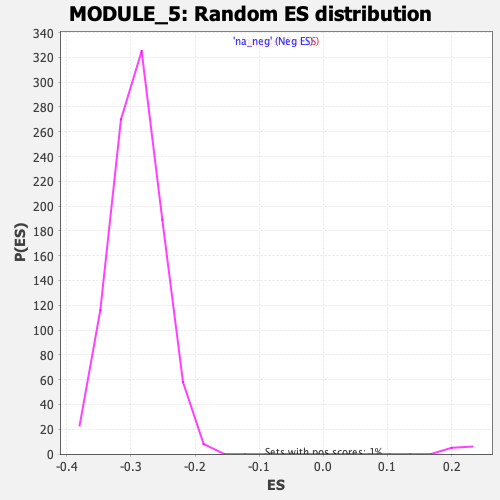

| | | Dataset | DE_genes2 |
| Phenotype | NoPhenotypeAvailable |
| Upregulated in class | na_pos |
| GeneSet | MODULE_5 |
| Enrichment Score (ES) | 0.48094985 |
| Normalized Enrichment Score (NES) | 2.186632 |
| Nominal p-value | 0.0 |
| FDR q-value | 1.367647E-4 |
| FWER p-Value | 0.001 |
Table: GSEA Results Summary
 Fig 1: Enrichment plot: MODULE_5
Fig 1: Enrichment plot: MODULE_5
Profile of the Running ES Score & Positions of GeneSet Members on the Rank Ordered List
| PROBE | GENE SYMBOL | GENE_TITLE | RANK IN GENE LIST | RANK METRIC SCORE | RUNNING ES | CORE ENRICHMENT | | 1 | ANXA2 | | | 4 | 16.394 | 0.0267 | Yes |
| 2 | CCL5 | | | 5 | 15.806 | 0.0526 | Yes |
| 3 | CDA | | | 11 | 10.852 | 0.0701 | Yes |
| 4 | IL32 | | | 16 | 10.363 | 0.0869 | Yes |
| 5 | CD151 | | | 37 | 7.807 | 0.0985 | Yes |
| 6 | PLSCR1 | | | 62 | 7.005 | 0.1085 | Yes |
| 7 | CDC42EP1 | | | 69 | 6.820 | 0.1193 | Yes |
| 8 | UBE2L6 | | | 74 | 6.681 | 0.1300 | Yes |
| 9 | ITGB2 | | | 99 | 6.066 | 0.1385 | Yes |
| 10 | RFTN1 | | | 109 | 5.875 | 0.1476 | Yes |
| 11 | CYP27A1 | | | 110 | 5.875 | 0.1572 | Yes |
| 12 | STAT1 | | | 129 | 5.696 | 0.1655 | Yes |
| 13 | SLC7A7 | | | 139 | 5.587 | 0.1741 | Yes |
| 14 | IRF1 | | | 149 | 5.467 | 0.1825 | Yes |
| 15 | LAPTM5 | | | 165 | 5.298 | 0.1903 | Yes |
| 16 | LYN | | | 169 | 5.274 | 0.1988 | Yes |
| 17 | ZYX | | | 195 | 5.100 | 0.2056 | Yes |
| 18 | DEFB4A | | | 222 | 4.857 | 0.2119 | Yes |
| 19 | LTBP2 | | | 266 | 4.591 | 0.2168 | Yes |
| 20 | RRAS | | | 270 | 4.582 | 0.2242 | Yes |
| 21 | PLAUR | | | 272 | 4.561 | 0.2316 | Yes |
| 22 | CORO1A | | | 291 | 4.461 | 0.2378 | Yes |
| 23 | MX1 | | | 294 | 4.454 | 0.2450 | Yes |
| 24 | GLRX | | | 359 | 4.182 | 0.2479 | Yes |
| 25 | TYMP | | | 384 | 4.064 | 0.2531 | Yes |
| 26 | HSPG2 | | | 392 | 4.031 | 0.2593 | Yes |
| 27 | ACP2 | | | 408 | 3.950 | 0.2648 | Yes |
| 28 | FN1 | | | 423 | 3.913 | 0.2704 | Yes |
| 29 | SERPINH1 | | | 436 | 3.871 | 0.2760 | Yes |
| 30 | NDUFB7 | | | 438 | 3.868 | 0.2823 | Yes |
| 31 | TNFAIP3 | | | 475 | 3.759 | 0.2862 | Yes |
| 32 | IL2RG | | | 487 | 3.731 | 0.2917 | Yes |
| 33 | MVP | | | 502 | 3.704 | 0.2969 | Yes |
| 34 | CTSA | | | 503 | 3.703 | 0.3030 | Yes |
| 35 | PTP4A3 | | | 557 | 3.549 | 0.3055 | Yes |
| 36 | MYL9 | | | 606 | 3.395 | 0.3081 | Yes |
| 37 | CDKN1A | | | 618 | 3.368 | 0.3130 | Yes |
| 38 | MMP9 | | | 641 | 3.327 | 0.3171 | Yes |
| 39 | IFI27 | | | 665 | 3.279 | 0.3210 | Yes |
| 40 | TGFBI | | | 668 | 3.267 | 0.3263 | Yes |
| 41 | NEDD9 | | | 680 | 3.232 | 0.3309 | Yes |
| 42 | GPRC5A | | | 683 | 3.227 | 0.3361 | Yes |
| 43 | SERPINA3 | | | 761 | 3.097 | 0.3364 | Yes |
| 44 | CXCL2 | | | 773 | 3.082 | 0.3408 | Yes |
| 45 | DNM2 | | | 794 | 3.056 | 0.3446 | Yes |
| 46 | CD44 | | | 813 | 3.021 | 0.3484 | Yes |
| 47 | LGMN | | | 818 | 3.014 | 0.3531 | Yes |
| 48 | LTBR | | | 836 | 2.971 | 0.3569 | Yes |
| 49 | RNASE1 | | | 846 | 2.949 | 0.3612 | Yes |
| 50 | ICAM1 | | | 852 | 2.937 | 0.3657 | Yes |
| 51 | COL6A1 | | | 874 | 2.901 | 0.3692 | Yes |
| 52 | SRGN | | | 957 | 2.785 | 0.3687 | Yes |
| 53 | IL1B | | | 989 | 2.750 | 0.3713 | Yes |
| 54 | ALAS1 | | | 992 | 2.744 | 0.3757 | Yes |
| 55 | KLHDC3 | | | 1033 | 2.697 | 0.3776 | Yes |
| 56 | MAPKAPK3 | | | 1061 | 2.652 | 0.3803 | Yes |
| 57 | RHOG | | | 1063 | 2.650 | 0.3846 | Yes |
| 58 | SLC16A3 | | | 1074 | 2.630 | 0.3883 | Yes |
| 59 | S100A11 | | | 1083 | 2.619 | 0.3921 | Yes |
| 60 | VCAN | | | 1131 | 2.567 | 0.3934 | Yes |
| 61 | LPXN | | | 1144 | 2.550 | 0.3968 | Yes |
| 62 | CD14 | | | 1235 | 2.439 | 0.3953 | Yes |
| 63 | CXCL1 | | | 1270 | 2.390 | 0.3971 | Yes |
| 64 | THBS1 | | | 1276 | 2.381 | 0.4007 | Yes |
| 65 | IRF9 | | | 1277 | 2.381 | 0.4046 | Yes |
| 66 | APOE | | | 1289 | 2.370 | 0.4078 | Yes |
| 67 | QSOX1 | | | 1305 | 2.351 | 0.4108 | Yes |
| 68 | SELL | | | 1312 | 2.345 | 0.4142 | Yes |
| 69 | ALPL | | | 1330 | 2.326 | 0.4170 | Yes |
| 70 | NNMT | | | 1343 | 2.321 | 0.4201 | Yes |
| 71 | CXCL8 | | | 1367 | 2.297 | 0.4224 | Yes |
| 72 | EFNA1 | | | 1369 | 2.295 | 0.4261 | Yes |
| 73 | TCIRG1 | | | 1377 | 2.290 | 0.4295 | Yes |
| 74 | COL6A2 | | | 1406 | 2.265 | 0.4314 | Yes |
| 75 | MSLN | | | 1411 | 2.258 | 0.4349 | Yes |
| 76 | TBC1D2B | | | 1429 | 2.239 | 0.4375 | Yes |
| 77 | GBP1 | | | 1468 | 2.209 | 0.4388 | Yes |
| 78 | CTSC | | | 1504 | 2.173 | 0.4402 | Yes |
| 79 | GRN | | | 1505 | 2.173 | 0.4438 | Yes |
| 80 | MAP2K3 | | | 1545 | 2.133 | 0.4449 | Yes |
| 81 | CNN3 | | | 1571 | 2.112 | 0.4468 | Yes |
| 82 | IL4R | | | 1663 | 2.026 | 0.4445 | Yes |
| 83 | GNS | | | 1670 | 2.020 | 0.4474 | Yes |
| 84 | RBPMS | | | 1758 | 1.945 | 0.4452 | Yes |
| 85 | CYB5R1 | | | 1814 | 1.906 | 0.4450 | Yes |
| 86 | MUC1 | | | 1861 | 1.867 | 0.4452 | Yes |
| 87 | ITGB5 | | | 1974 | 1.775 | 0.4412 | Yes |
| 88 | RNF167 | | | 1994 | 1.759 | 0.4429 | Yes |
| 89 | GJA1 | | | 2027 | 1.737 | 0.4438 | Yes |
| 90 | ANOS1 | | | 2050 | 1.721 | 0.4452 | Yes |
| 91 | WFS1 | | | 2148 | 1.650 | 0.4419 | Yes |
| 92 | SECTM1 | | | 2167 | 1.639 | 0.4435 | Yes |
| 93 | CCL2 | | | 2172 | 1.637 | 0.4460 | Yes |
| 94 | PDGFRA | | | 2198 | 1.621 | 0.4471 | Yes |
| 95 | SERPINA1 | | | 2231 | 1.598 | 0.4477 | Yes |
| 96 | TNFAIP2 | | | 2236 | 1.597 | 0.4501 | Yes |
| 97 | CX3CL1 | | | 2246 | 1.590 | 0.4521 | Yes |
| 98 | ACTN1 | | | 2289 | 1.568 | 0.4521 | Yes |
| 99 | PTPRK | | | 2332 | 1.541 | 0.4520 | Yes |
| 100 | TNC | | | 2370 | 1.510 | 0.4522 | Yes |
| 101 | CHI3L2 | | | 2416 | 1.482 | 0.4519 | Yes |
| 102 | MAFF | | | 2457 | 1.463 | 0.4518 | Yes |
| 103 | P4HA2 | | | 2474 | 1.457 | 0.4532 | Yes |
| 104 | TLR2 | | | 2476 | 1.456 | 0.4555 | Yes |
| 105 | LCN2 | | | 2532 | 1.427 | 0.4545 | Yes |
| 106 | MALL | | | 2550 | 1.413 | 0.4558 | Yes |
| 107 | RHOB | | | 2559 | 1.410 | 0.4576 | Yes |
| 108 | HLA-DQA1 | | | 2568 | 1.406 | 0.4594 | Yes |
| 109 | LDLR | | | 2601 | 1.387 | 0.4597 | Yes |
| 110 | CDH5 | | | 2626 | 1.374 | 0.4605 | Yes |
| 111 | STAT3 | | | 2673 | 1.352 | 0.4598 | Yes |
| 112 | ATP11A | | | 2696 | 1.340 | 0.4607 | Yes |
| 113 | IL1R1 | | | 2697 | 1.339 | 0.4629 | Yes |
| 114 | CSF3R | | | 2743 | 1.310 | 0.4622 | Yes |
| 115 | ADAM19 | | | 2786 | 1.293 | 0.4618 | Yes |
| 116 | COL1A2 | | | 2789 | 1.291 | 0.4638 | Yes |
| 117 | PIM1 | | | 2797 | 1.286 | 0.4654 | Yes |
| 118 | IFNGR1 | | | 2819 | 1.277 | 0.4662 | Yes |
| 119 | WFDC2 | | | 2827 | 1.275 | 0.4679 | Yes |
| 120 | ID1 | | | 2845 | 1.266 | 0.4689 | Yes |
| 121 | ALOX5 | | | 2906 | 1.236 | 0.4672 | Yes |
| 122 | CRYAB | | | 2938 | 1.221 | 0.4673 | Yes |
| 123 | ECHS1 | | | 2960 | 1.213 | 0.4680 | Yes |
| 124 | FBLN1 | | | 2973 | 1.207 | 0.4693 | Yes |
| 125 | SDC1 | | | 2989 | 1.200 | 0.4703 | Yes |
| 126 | DHRS3 | | | 3005 | 1.194 | 0.4713 | Yes |
| 127 | SERPINB1 | | | 3040 | 1.179 | 0.4712 | Yes |
| 128 | CYB5A | | | 3055 | 1.173 | 0.4722 | Yes |
| 129 | S100A8 | | | 3149 | 1.133 | 0.4683 | Yes |
| 130 | APRT | | | 3176 | 1.121 | 0.4686 | Yes |
| 131 | FOLR1 | | | 3195 | 1.113 | 0.4693 | Yes |
| 132 | PLXND1 | | | 3215 | 1.106 | 0.4699 | Yes |
| 133 | SRRM2 | | | 3225 | 1.102 | 0.4712 | Yes |
| 134 | SLPI | | | 3287 | 1.078 | 0.4692 | Yes |
| 135 | DTX4 | | | 3303 | 1.074 | 0.4700 | Yes |
| 136 | RARRES2 | | | 3333 | 1.063 | 0.4700 | Yes |
| 137 | RAC2 | | | 3362 | 1.053 | 0.4700 | Yes |
| 138 | LAMB2 | | | 3394 | 1.042 | 0.4698 | Yes |
| 139 | NOTCH3 | | | 3410 | 1.034 | 0.4705 | Yes |
| 140 | JUNB | | | 3462 | 1.017 | 0.4690 | Yes |
| 141 | S100A9 | | | 3473 | 1.014 | 0.4701 | Yes |
| 142 | UPP1 | | | 3479 | 1.012 | 0.4714 | Yes |
| 143 | C1S | | | 3483 | 1.011 | 0.4729 | Yes |
| 144 | FUCA1 | | | 3517 | 0.999 | 0.4725 | Yes |
| 145 | FSTL3 | | | 3531 | 0.996 | 0.4733 | Yes |
| 146 | CCND1 | | | 3532 | 0.996 | 0.4750 | Yes |
| 147 | TSPAN1 | | | 3538 | 0.993 | 0.4763 | Yes |
| 148 | RPS6KA1 | | | 3540 | 0.992 | 0.4779 | Yes |
| 149 | COX7A1 | | | 3563 | 0.984 | 0.4781 | Yes |
| 150 | AP1M1 | | | 3601 | 0.969 | 0.4774 | Yes |
| 151 | ITGAM | | | 3608 | 0.967 | 0.4786 | Yes |
| 152 | LIMK2 | | | 3633 | 0.956 | 0.4787 | Yes |
| 153 | PDXK | | | 3634 | 0.956 | 0.4803 | Yes |
| 154 | DAB2 | | | 3665 | 0.945 | 0.4800 | Yes |
| 155 | S100P | | | 3686 | 0.937 | 0.4803 | Yes |
| 156 | MAGI1 | | | 3701 | 0.929 | 0.4809 | Yes |
| 157 | TSPAN3 | | | 3812 | 0.891 | 0.4756 | No |
| 158 | MAOB | | | 3840 | 0.883 | 0.4754 | No |
| 159 | HP | | | 3864 | 0.876 | 0.4754 | No |
| 160 | FCGRT | | | 3887 | 0.871 | 0.4755 | No |
| 161 | HEG1 | | | 3888 | 0.871 | 0.4769 | No |
| 162 | GRK5 | | | 3920 | 0.862 | 0.4764 | No |
| 163 | LGALS9 | | | 3950 | 0.850 | 0.4760 | No |
| 164 | CACNA2D2 | | | 3953 | 0.850 | 0.4773 | No |
| 165 | AGR2 | | | 3967 | 0.846 | 0.4779 | No |
| 166 | RAB5C | | | 3982 | 0.842 | 0.4784 | No |
| 167 | PIK3C2B | | | 3988 | 0.840 | 0.4794 | No |
| 168 | VAMP5 | | | 4061 | 0.821 | 0.4763 | No |
| 169 | NEBL | | | 4085 | 0.811 | 0.4763 | No |
| 170 | CEACAM6 | | | 4091 | 0.809 | 0.4773 | No |
| 171 | SFTPD | | | 4121 | 0.803 | 0.4768 | No |
| 172 | HLA-DQB1 | | | 4127 | 0.802 | 0.4778 | No |
| 173 | FBP1 | | | 4234 | 0.767 | 0.4725 | No |
| 174 | NCF4 | | | 4238 | 0.766 | 0.4736 | No |
| 175 | TNFRSF1B | | | 4262 | 0.761 | 0.4734 | No |
| 176 | ITPR3 | | | 4272 | 0.758 | 0.4741 | No |
| 177 | ADGRE5 | | | 4276 | 0.756 | 0.4752 | No |
| 178 | TM4SF1 | | | 4291 | 0.751 | 0.4755 | No |
| 179 | ALOX5AP | | | 4297 | 0.750 | 0.4764 | No |
| 180 | PCOLCE | | | 4320 | 0.744 | 0.4763 | No |
| 181 | TNFRSF14 | | | 4351 | 0.735 | 0.4757 | No |
| 182 | EMILIN1 | | | 4438 | 0.711 | 0.4715 | No |
| 183 | WAS | | | 4466 | 0.703 | 0.4710 | No |
| 184 | ARHGDIB | | | 4494 | 0.695 | 0.4705 | No |
| 185 | IL1RN | | | 4515 | 0.689 | 0.4704 | No |
| 186 | DPYSL3 | | | 4520 | 0.688 | 0.4712 | No |
| 187 | TNFSF10 | | | 4539 | 0.682 | 0.4712 | No |
| 188 | ENG | | | 4544 | 0.679 | 0.4721 | No |
| 189 | TPM1 | | | 4705 | 0.637 | 0.4633 | No |
| 190 | SCGB1A1 | | | 4727 | 0.631 | 0.4630 | No |
| 191 | CAPG | | | 4747 | 0.626 | 0.4628 | No |
| 192 | CLDN7 | | | 4823 | 0.611 | 0.4592 | No |
| 193 | F3 | | | 4824 | 0.611 | 0.4602 | No |
| 194 | LCP1 | | | 4828 | 0.611 | 0.4610 | No |
| 195 | LRRC32 | | | 4855 | 0.604 | 0.4604 | No |
| 196 | LAMA5 | | | 4893 | 0.595 | 0.4591 | No |
| 197 | TACSTD2 | | | 4903 | 0.594 | 0.4595 | No |
| 198 | KRT19 | | | 5017 | 0.566 | 0.4535 | No |
| 199 | RAB31 | | | 5075 | 0.551 | 0.4508 | No |
| 200 | ADH1C | | | 5092 | 0.546 | 0.4508 | No |
| 201 | ARHGAP4 | | | 5096 | 0.545 | 0.4515 | No |
| 202 | SRPX | | | 5137 | 0.533 | 0.4499 | No |
| 203 | ST6GALNAC4 | | | 5350 | 0.481 | 0.4375 | No |
| 204 | HLA-DMA | | | 5377 | 0.474 | 0.4367 | No |
| 205 | HCK | | | 5395 | 0.471 | 0.4364 | No |
| 206 | SCNN1A | | | 5416 | 0.466 | 0.4360 | No |
| 207 | ASAH1 | | | 5435 | 0.463 | 0.4356 | No |
| 208 | COL4A1 | | | 5458 | 0.459 | 0.4350 | No |
| 209 | CASP4 | | | 5468 | 0.456 | 0.4352 | No |
| 210 | SOCS3 | | | 5507 | 0.449 | 0.4336 | No |
| 211 | ADIRF | | | 5525 | 0.444 | 0.4333 | No |
| 212 | KRT7 | | | 5556 | 0.437 | 0.4321 | No |
| 213 | AQP1 | | | 5612 | 0.424 | 0.4294 | No |
| 214 | PECAM1 | | | 5633 | 0.420 | 0.4289 | No |
| 215 | APOD | | | 5791 | 0.387 | 0.4198 | No |
| 216 | EPAS1 | | | 5899 | 0.365 | 0.4138 | No |
| 217 | ACP5 | | | 6001 | 0.346 | 0.4081 | No |
| 218 | SLC39A8 | | | 6056 | 0.335 | 0.4053 | No |
| 219 | TIMP3 | | | 6064 | 0.333 | 0.4054 | No |
| 220 | CITED2 | | | 6070 | 0.333 | 0.4057 | No |
| 221 | IER3 | | | 6115 | 0.322 | 0.4035 | No |
| 222 | ALDH1A1 | | | 6139 | 0.317 | 0.4026 | No |
| 223 | MYO1B | | | 6143 | 0.317 | 0.4029 | No |
| 224 | CMAHP | | | 6163 | 0.313 | 0.4022 | No |
| 225 | MAL | | | 6188 | 0.307 | 0.4013 | No |
| 226 | PLEC | | | 6212 | 0.299 | 0.4003 | No |
| 227 | VWF | | | 6460 | 0.252 | 0.3855 | No |
| 228 | DUSP6 | | | 6555 | 0.233 | 0.3800 | No |
| 229 | AQP3 | | | 6578 | 0.226 | 0.3790 | No |
| 230 | CDH11 | | | 6629 | 0.218 | 0.3763 | No |
| 231 | MYH11 | | | 6687 | 0.206 | 0.3731 | No |
| 232 | PPP4R1 | | | 6693 | 0.204 | 0.3732 | No |
| 233 | LIPA | | | 6735 | 0.195 | 0.3709 | No |
| 234 | TGFB1 | | | 6882 | 0.174 | 0.3622 | No |
| 235 | SNX1 | | | 7005 | 0.154 | 0.3549 | No |
| 236 | IL7R | | | 7029 | 0.150 | 0.3537 | No |
| 237 | MAOA | | | 7063 | 0.142 | 0.3519 | No |
| 238 | EMP2 | | | 7078 | 0.139 | 0.3513 | No |
| 239 | KRT18 | | | 7110 | 0.132 | 0.3496 | No |
| 240 | ANXA3 | | | 7137 | 0.127 | 0.3482 | No |
| 241 | BCAM | | | 7211 | 0.114 | 0.3439 | No |
| 242 | LMO2 | | | 7262 | 0.104 | 0.3409 | No |
| 243 | CES1 | | | 7270 | 0.103 | 0.3407 | No |
| 244 | CD37 | | | 7272 | 0.102 | 0.3408 | No |
| 245 | COL3A1 | | | 7361 | 0.086 | 0.3355 | No |
| 246 | NKX2-1 | | | 7400 | 0.081 | 0.3333 | No |
| 247 | TIMP2 | | | 7432 | 0.076 | 0.3315 | No |
| 248 | HCLS1 | | | 7454 | 0.073 | 0.3303 | No |
| 249 | FLNA | | | 7455 | 0.073 | 0.3304 | No |
| 250 | CYP4B1 | | | 7512 | 0.063 | 0.3270 | No |
| 251 | EPB41L3 | | | 7535 | 0.059 | 0.3258 | No |
| 252 | SOD3 | | | 7536 | 0.059 | 0.3259 | No |
| 253 | G0S2 | | | 7544 | 0.057 | 0.3255 | No |
| 254 | HES1 | | | 7584 | 0.052 | 0.3232 | No |
| 255 | PON2 | | | 7589 | 0.051 | 0.3230 | No |
| 256 | PNP | | | 7676 | 0.037 | 0.3178 | No |
| 257 | MGLL | | | 7826 | 0.013 | 0.3086 | No |
| 258 | LILRB3 | | | 7829 | 0.012 | 0.3085 | No |
| 259 | PPL | | | 7856 | 0.010 | 0.3069 | No |
| 260 | DLC1 | | | 7871 | 0.008 | 0.3061 | No |
| 261 | TGM2 | | | 7888 | 0.006 | 0.3051 | No |
| 262 | AQP4 | | | 7980 | -0.008 | 0.2995 | No |
| 263 | IL13RA1 | | | 8101 | -0.027 | 0.2921 | No |
| 264 | HOPX | | | 8103 | -0.027 | 0.2921 | No |
| 265 | TSPAN7 | | | 8146 | -0.032 | 0.2895 | No |
| 266 | MTUS1 | | | 8179 | -0.038 | 0.2876 | No |
| 267 | ACSL1 | | | 8294 | -0.054 | 0.2806 | No |
| 268 | MSMO1 | | | 8327 | -0.061 | 0.2788 | No |
| 269 | ITGA3 | | | 8409 | -0.077 | 0.2739 | No |
| 270 | MYLK | | | 8420 | -0.079 | 0.2734 | No |
| 271 | FABP4 | | | 8523 | -0.097 | 0.2672 | No |
| 272 | TFPI | | | 8533 | -0.099 | 0.2668 | No |
| 273 | NFIL3 | | | 8538 | -0.100 | 0.2668 | No |
| 274 | IGFBP4 | | | 8591 | -0.108 | 0.2637 | No |
| 275 | CFD | | | 8595 | -0.109 | 0.2637 | No |
| 276 | GPC3 | | | 8627 | -0.115 | 0.2620 | No |
| 277 | ANXA1 | | | 8670 | -0.124 | 0.2596 | No |
| 278 | GPNMB | | | 8676 | -0.125 | 0.2595 | No |
| 279 | EPCAM | | | 8682 | -0.126 | 0.2594 | No |
| 280 | GYG1 | | | 8684 | -0.127 | 0.2595 | No |
| 281 | GPX3 | | | 8776 | -0.148 | 0.2542 | No |
| 282 | LMO3 | | | 8996 | -0.191 | 0.2409 | No |
| 283 | NUPR1 | | | 9268 | -0.259 | 0.2246 | No |
| 284 | CD55 | | | 9285 | -0.264 | 0.2240 | No |
| 285 | TGFBR2 | | | 9293 | -0.264 | 0.2240 | No |
| 286 | PER1 | | | 9314 | -0.268 | 0.2232 | No |
| 287 | S100A4 | | | 9344 | -0.275 | 0.2219 | No |
| 288 | EMP3 | | | 9393 | -0.288 | 0.2194 | No |
| 289 | DPYD | | | 9449 | -0.303 | 0.2165 | No |
| 290 | LAMP3 | | | 9469 | -0.306 | 0.2158 | No |
| 291 | CLEC2B | | | 9631 | -0.347 | 0.2064 | No |
| 292 | IL6 | | | 9946 | -0.445 | 0.1877 | No |
| 293 | IGFBP6 | | | 9978 | -0.455 | 0.1866 | No |
| 294 | FOSL2 | | | 10062 | -0.477 | 0.1822 | No |
| 295 | CSRP1 | | | 10103 | -0.491 | 0.1806 | No |
| 296 | BLVRB | | | 10166 | -0.514 | 0.1776 | No |
| 297 | CALCRL | | | 10287 | -0.550 | 0.1711 | No |
| 298 | PTX3 | | | 10327 | -0.561 | 0.1696 | No |
| 299 | HMOX1 | | | 10366 | -0.575 | 0.1682 | No |
| 300 | ABLIM1 | | | 10535 | -0.637 | 0.1588 | No |
| 301 | CYBB | | | 10595 | -0.661 | 0.1562 | No |
| 302 | ADH1A | | | 10617 | -0.669 | 0.1560 | No |
| 303 | CRIP1 | | | 10627 | -0.670 | 0.1566 | No |
| 304 | ANXA4 | | | 10666 | -0.682 | 0.1554 | No |
| 305 | IFI16 | | | 10817 | -0.735 | 0.1473 | No |
| 306 | ADIPOR2 | | | 10822 | -0.736 | 0.1482 | No |
| 307 | INSIG1 | | | 10902 | -0.767 | 0.1446 | No |
| 308 | SNRK | | | 10904 | -0.767 | 0.1458 | No |
| 309 | CALU | | | 11017 | -0.808 | 0.1402 | No |
| 310 | CAV1 | | | 11109 | -0.845 | 0.1360 | No |
| 311 | CALD1 | | | 11179 | -0.873 | 0.1331 | No |
| 312 | PPP1R15A | | | 11208 | -0.884 | 0.1329 | No |
| 313 | CADM1 | | | 11246 | -0.899 | 0.1321 | No |
| 314 | NR4A1 | | | 11431 | -0.981 | 0.1223 | No |
| 315 | ITPR1 | | | 11477 | -0.998 | 0.1211 | No |
| 316 | ADM | | | 11627 | -1.057 | 0.1137 | No |
| 317 | APOC1 | | | 11658 | -1.070 | 0.1136 | No |
| 318 | POSTN | | | 11692 | -1.083 | 0.1133 | No |
| 319 | LUM | | | 11809 | -1.136 | 0.1080 | No |
| 320 | SEC11A | | | 11863 | -1.160 | 0.1066 | No |
| 321 | AOC3 | | | 11940 | -1.192 | 0.1039 | No |
| 322 | MFAP4 | | | 11941 | -1.194 | 0.1058 | No |
| 323 | TPM2 | | | 11957 | -1.198 | 0.1069 | No |
| 324 | ABCA3 | | | 12027 | -1.234 | 0.1046 | No |
| 325 | SLIT2 | | | 12082 | -1.265 | 0.1034 | No |
| 326 | ITGA6 | | | 12086 | -1.267 | 0.1053 | No |
| 327 | CAV2 | | | 12214 | -1.333 | 0.0996 | No |
| 328 | VEGFA | | | 12342 | -1.396 | 0.0940 | No |
| 329 | ETS2 | | | 12507 | -1.476 | 0.0863 | No |
| 330 | GATA2 | | | 12810 | -1.653 | 0.0704 | No |
| 331 | COL6A3 | | | 12914 | -1.723 | 0.0668 | No |
| 332 | CYP1B1 | | | 12922 | -1.728 | 0.0692 | No |
| 333 | PTPN12 | | | 12931 | -1.734 | 0.0716 | No |
| 334 | FADS1 | | | 13297 | -1.951 | 0.0522 | No |
| 335 | NAMPT | | | 13369 | -2.009 | 0.0511 | No |
| 336 | LPCAT1 | | | 13412 | -2.032 | 0.0518 | No |
| 337 | ALCAM | | | 13469 | -2.081 | 0.0518 | No |
| 338 | SLCO2B1 | | | 13487 | -2.093 | 0.0542 | No |
| 339 | RBMS1 | | | 13526 | -2.115 | 0.0553 | No |
| 340 | DMBT1 | | | 13640 | -2.193 | 0.0519 | No |
| 341 | WWTR1 | | | 13721 | -2.257 | 0.0507 | No |
| 342 | SLC39A7 | | | 13873 | -2.388 | 0.0453 | No |
| 343 | TBX2 | | | 13881 | -2.399 | 0.0488 | No |
| 344 | HPGD | | | 14084 | -2.584 | 0.0405 | No |
| 345 | F13A1 | | | 14144 | -2.640 | 0.0412 | No |
| 346 | UGCG | | | 14242 | -2.738 | 0.0397 | No |
| 347 | FGFR1 | | | 14259 | -2.748 | 0.0432 | No |
| 348 | ANGPT1 | | | 14354 | -2.833 | 0.0421 | No |
| 349 | FGFR4 | | | 14538 | -3.035 | 0.0357 | No |
| 350 | TAP1 | | | 14592 | -3.101 | 0.0375 | No |
| 351 | MEGF9 | | | 14627 | -3.157 | 0.0406 | No |
| 352 | RGS5 | | | 14640 | -3.175 | 0.0451 | No |
| 353 | GNG11 | | | 14685 | -3.228 | 0.0477 | No |
| 354 | CRIM1 | | | 14801 | -3.360 | 0.0461 | No |
| 355 | PLIN2 | | | 14825 | -3.393 | 0.0502 | No |
| 356 | NRGN | | | 14846 | -3.418 | 0.0546 | No |
| 357 | SLC2A3 | | | 14912 | -3.525 | 0.0564 | No |
| 358 | RGS2 | | | 15188 | -3.901 | 0.0458 | No |
| 359 | BIRC2 | | | 15232 | -3.974 | 0.0496 | No |
| 360 | TCEAL4 | | | 15745 | -5.004 | 0.0262 | No |
| 361 | DDX21 | | | 15775 | -5.062 | 0.0327 | No |
| 362 | TGFBR3 | | | 16462 | -8.531 | 0.0043 | No |
Table: GSEA details [plain text format]

Fig 2: MODULE_5: Random ES distribution
Gene set null distribution of ES for MODULE_5